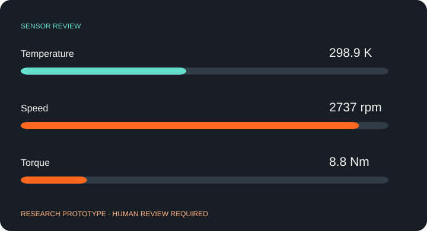
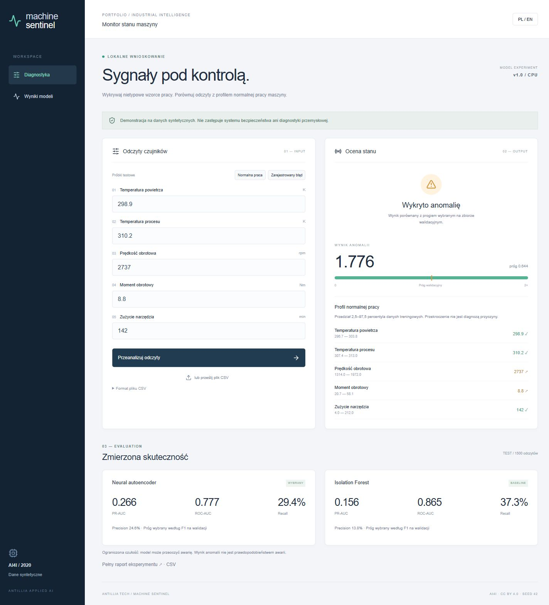

Autoencoder normalnej pracy
Sieć uczy się rekonstrukcji normalnych obserwacji.
Detekcja anomalii / CASE STUDY 04
Porównuje odczyty czujników z normalnym zakresem pracy. Prototyp badawczy.
wymaga dalszego rozwoju
Wykrył 29% awarii w syntetycznym teście. To za mało do samodzielnego monitoringu.

SCENARIUSZ DZIAŁANIA / USE SCENARIOPojedynczy wysoki odczyt nie musi oznaczać awarii. Potrzebny jest wspólny obraz temperatury, obrotów, momentu i zużycia narzędzia.
Sieć uczy się rekonstrukcji normalnych obserwacji.
Dwie metody, próg dobrany na walidacji i jawne metryki.
Analiza pojedynczego odczytu lub pliku, wraz z zakresami treningowymi.
1500 odczytów · dane syntetyczne
PR-AUC ↑Testowy odczyt z prędkością 2737 rpm i momentem 8,8 Nm uzyskał wynik anomalii 1,776 przy progu 0,644. To wskazówka do przeglądu, nie diagnoza przyczyny.

Wyszukiwanie nietypowych kombinacji sygnałów do dalszego przeglądu.
Ocena, jakie dodatkowe dane są potrzebne przed wdrożeniem.
Świadomy wybór między przeoczonymi zdarzeniami a fałszywymi alarmami.
AI4I jest zbiorem syntetycznym. Przy wybranym progu recall wynosi 29,41%, precision 24,59%: wiele awarii pozostaje niewykrytych. Wynik nie jest prawdopodobieństwem awarii; projekt nie zastępuje przemysłowego systemu bezpieczeństwa.
AI4I 2020 · CC BY 4.0 ↗Projekt demonstracyjny zespołu Antillia. Scenariusze zastosowań opisują możliwości adaptacji; nie są deklaracją wdrożenia u klienta.
Pokaż nam problem. Dobierzemy zakres, dane i sposób sprawdzenia rozwiązania.
Omów swój projekt